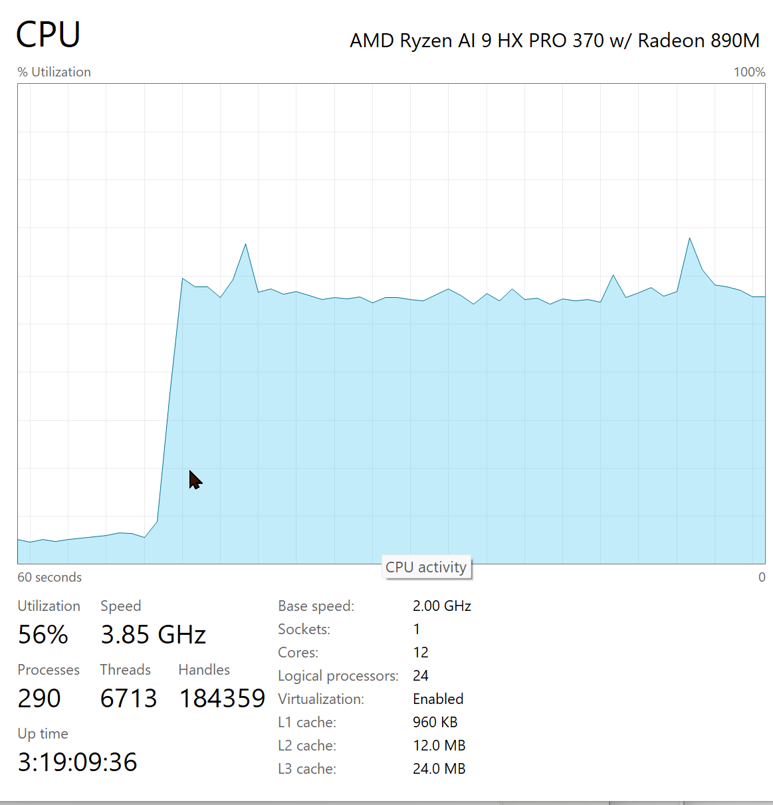
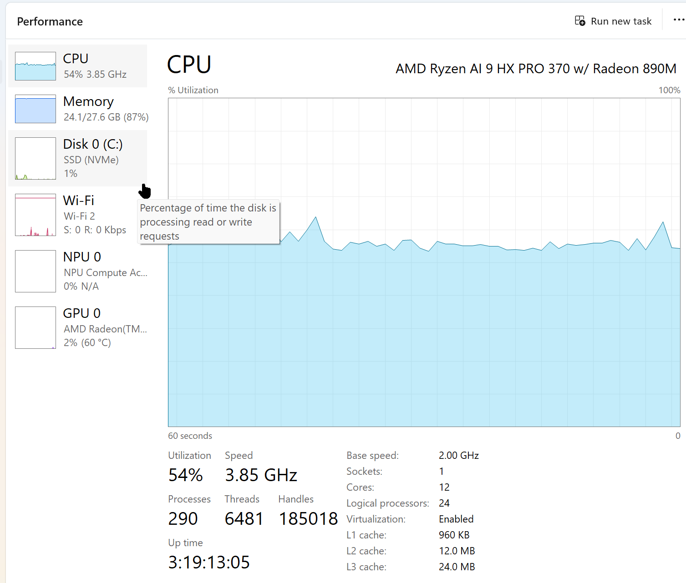
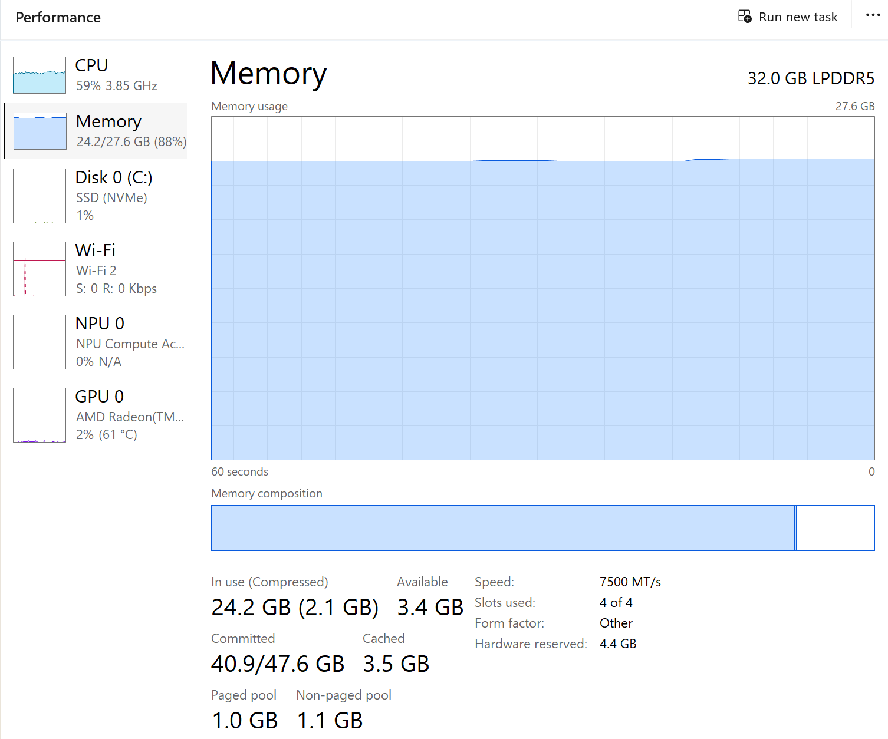
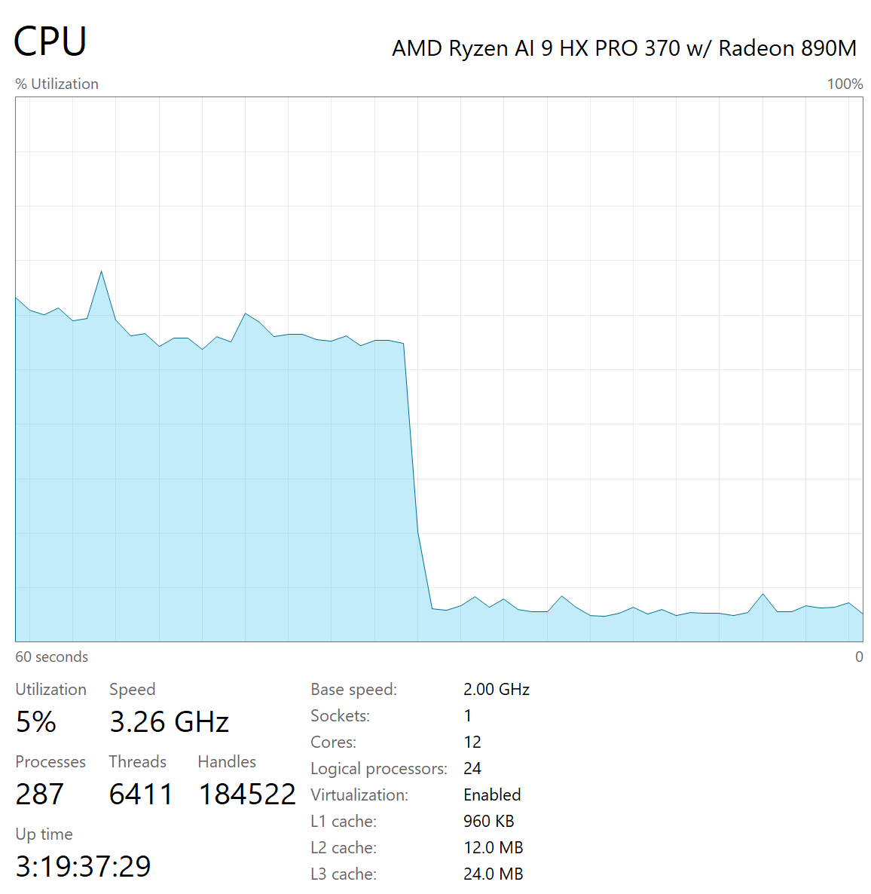

← Test Log · AI Lab Portal Home
Test 25 measured how much time two levers save on qwen3:8b — turning its "thinking" off, and constraining answer length — and found both real, with token throughput holding steady at roughly 13–15 tok/s in every condition. That steady-tok/s finding raised an obvious follow-up: what does the hardware itself look like while a request is running, and does the resource picture back up what the timing numbers already said?
Windows Task Manager's Performance tab was captured on Lab PC 2 (the Beelink SER9, an AMD Ryzen AI 9 HX PRO 370 with a Radeon 890M) at three points around a request: idle just before it starts, mid-generation, and the moment it finishes. These are illustrative snapshots from the live Test 25 investigation, not a scored per-trial capture — read them as a picture of the shape of the load, not as a fifth measured condition.
The machine sits at low single-digit CPU utilization at rest. The instant a request begins generating, utilization jumps sharply and settles onto a plateau — the cliff in the graph below is the visible boundary between "waiting" and "computing."

Partway through generation, both CPU and memory hold steady rather than climbing or spiking — the load is flat for the duration of the response, not front-loaded or bursty.


When the response finishes, utilization doesn't taper — it falls off a cliff, back down to the same low idle band the machine started at.

Generation on this hardware is CPU-bound, full stop. GPU utilization sits at 2% and NPU at 0% throughout — the Radeon 890M and the NPU aren't doing any of the work. Every token qwen3:8b produces here is coming from the CPU's 12 cores / 24 threads. That matters for reading Test 25's results correctly: the ~13–15 tok/s ceiling those levers were measured against is a CPU-only number. Thinking-off and output-length constraints save time by producing fewer tokens against that ceiling — neither lever touches the ceiling itself. GPU or NPU offload is a separate lever that touches the ceiling directly, not the token count above it — tested directly below.
The flat plateau is the visual match for Test 25's steady tok/s finding. Test 25 found token throughput held in a tight 12.8–15.1 tok/s band across all four conditions (thinking on/off × constrained/unconstrained). The CPU graph shows why that's plausible: utilization doesn't ramp, spike, or vary once generation starts — it holds a flat plateau for the whole run, then cliffs back to idle exactly when the response ends. A steady compute load producing a steady token rate is consistent with — though doesn't by itself prove — the same generation mechanism running unchanged underneath all four conditions, with only the token count differing between them.
Memory is a flat, standing cost, not a per-condition variable. Usage holds at 87–88% of the 27.6 GB Windows reports as usable (32 GB of physical LPDDR5 total, with 4.4 GB carved out as "Hardware reserved" — likely shared graphics memory for the integrated Radeon 890M) and doesn't visibly move during the capture window. That's consistent with memory pressure being driven by the loaded model weights and context window, not by which Test 25 condition is running — the thinking/output-length levers change how long a response takes, not how much RAM it costs while it's running. Worth flagging on its own terms: 88% of usable memory is not a lot of headroom on this machine.
One open question, not explained here: the plateau sits around 54–60% utilization, not near 100%, despite the CPU being the only thing doing the work. Whether that reflects Ollama not using every available thread, a compute pattern that doesn't parallelize across all 24 logical processors, or something else, isn't determined by these screenshots — flagged as a candidate for a future look, not resolved by this one.
A stopwatch tells you a lever saved time. A resource graph tells you where the machine was spending it — and here, the CPU chart's cliff-shaped start and end line up with the numbers Test 25 already measured, while also surfacing something the timing bench alone couldn't: the GPU and NPU sitting untouched the entire time.
The paragraph above flagged GPU/NPU offload as an untested lever that touches the token-rate ceiling itself. It's since been tested directly on the same machine, using a separate tool and runtime outside the qwen3:8b/Ollama stack this page otherwise covers — the question being asked was about this hardware's GPU capability in general, not this specific model pairing.
What was tested: llmfit, a hardware-sizing tool, was installed on Lab PC 2 and detected something Ollama had never touched — the Radeon 890M reports 16GB of usable VRAM via Vulkan. Every check across Tests 20, 23, and 25 showed Ollama's own size_vram: 0: this lab has been CPU-only the entire time it's been running. Following llmfit's top hardware-fit recommendation, DeepSeek-R1-0528-Qwen3-8B (Q8_0, 8.1GB) was downloaded and run through a prebuilt llama.cpp + Vulkan runtime.
First attempt — inconclusive: full GPU offload failed immediately with an out-of-memory error, on an allocation under 1GB, before even reaching the model weights. The failure was partly self-inflicted: three llama-server processes were left running from setup (only one had been launched), two of them holding several GB each. Killing them recovered free RAM from ~5GB to ~19.6GB — so the first result was logged as inconclusive, not as a hardware limitation, since the test conditions weren't clean.
Clean retest — resolved: zero leftover processes and ~19.4GB of genuinely free RAM were confirmed before each run this time.
| GPU layers offloaded | Context | Result |
|---|---|---|
| 10 (partial) | 2048 | Loaded fine — 7.60 tok/s |
| 20 (partial) | 2048 | Loaded fine — 7.69 tok/s |
| 99 (full) | 2048 | Loaded fine — 9.39 tok/s |
Full Vulkan GPU offload works on this iGPU — the original out-of-memory error was a real confound (leftover processes eating ~14GB), not a hardware ceiling. But it's not a speed win here: the best GPU result, 9.39 tok/s, is still slower than the ~12–15 tok/s this model class already gets on the CPU alone, the same baseline this page documents from Tests 20/23/25. On this machine, the Radeon 890M iGPU via Vulkan currently loses to the 24-thread CPU for this workload — plausibly a shared-memory-bandwidth limitation of an integrated GPU next to a discrete card with its own dedicated VRAM.
One more data point worth keeping: llmfit's own fit/speed scoring assumed GPU mode and estimated 16.1 tok/s for this model on this hardware — measured reality (9.39 tok/s, best case) came in well under that. Not a reason to distrust the tool generally; more a reminder that a sizing tool's GPU estimate needs per-machine verification, which is exactly what its own suggested verification step is for.
An untested lever is a real unknown, not a hidden win waiting to be found. Testing it directly answered the open question above with an answer nobody had assumed going in: more hardware isn't automatically faster hardware — the CPU-only path this lab has run all along turns out to already be the faster path on this specific machine.